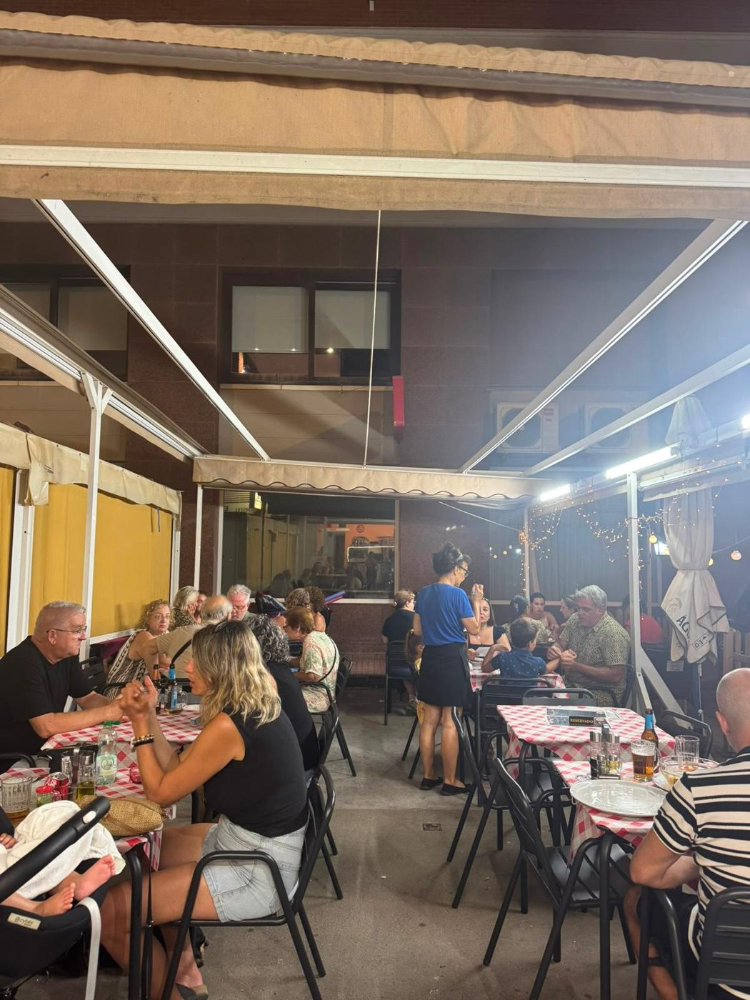

Cocina italiana de verdad
Il Gusto nació en Santa Pola con una idea sencilla: traer el sabor auténtico de Italia tal y como se hace allí, sin atajos ni ingredientes de bote.
Cada pizza se amasa a mano y cada salsa se prepara desde cero, con el mismo cariño con el que se cocina en casa. Con el tiempo nos hemos convertido en un rincón italiano de confianza para muchas familias de Santa Pola.
Detrás del horno, cada día, con ganas de que salgas de aquí con la misma sensación de siempre: la de haber comido como en Italia.
Todo hecho a mano
Nada de masa precocinada ni salsas de bote. Cada mañana en Il Gusto amasamos la pizza, estiramos la pasta y preparamos las salsas desde cero — como se ha hecho siempre en Italia.
¿Te apetece cenar en casa con Il Gusto?
Repartimos a domicilio por toda Santa Pola. Llama ya y pide tu pizza o pasta favorita — te la llevamos calentita.
Horario & ubicación
¿Te apetece cenar en Il Gusto esta noche?
Reserva tu mesa en nuestra terraza o pide para llevar — te esperamos en Santa Pola con el horno bien caliente.

Reseñas de nuestros clientes
Mira todas las reseñas reales, con fotos, en nuestro perfil de Google.
Ver reseñas en Google